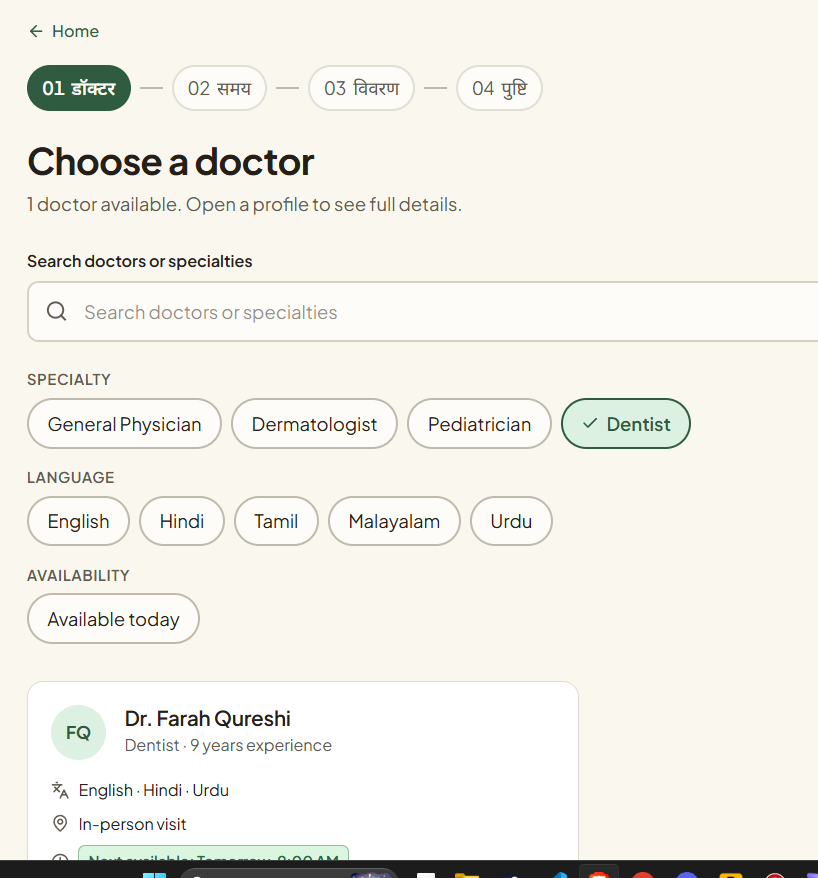
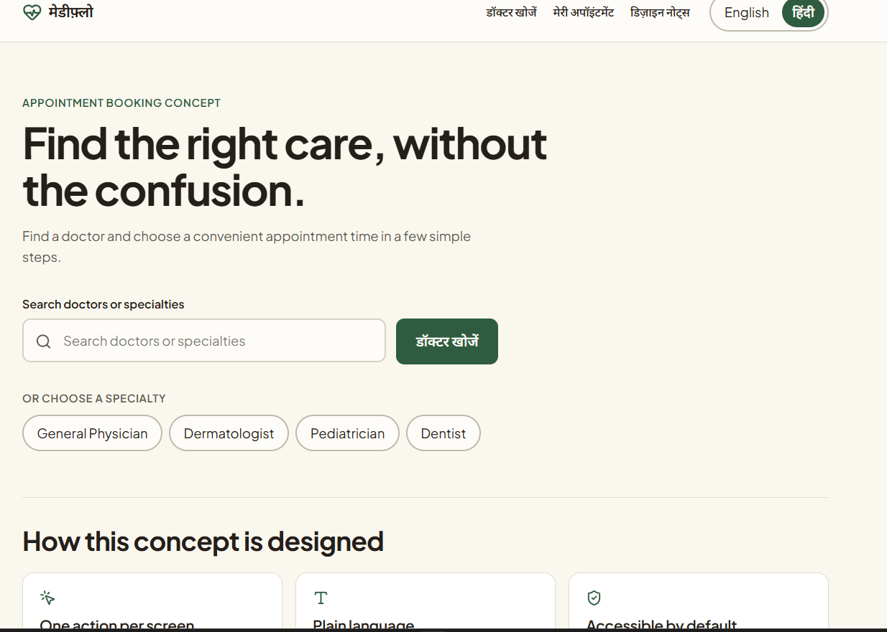

First-time smartphone user
May need large touch-friendly controls, plain language, and reassurance at each step.
COMPLETED CONCEPT · WORKING FRONTEND PROTOTYPE
Healthcare Appointment Experience
A small, thoughtful healthcare UX concept exploring how clearer information hierarchy, accessible interactions, and progressive decision-making can make appointment booking feel less confusing.
MediFlow helps a person find a doctor and book an appointment through a short, predictable flow. It uses fictional data and is not a real healthcare deployment.
Healthcare appointment interfaces can make users uncertain about what to do next. MediFlow explores a simpler sequence:
The experience focuses on reducing cognitive load, showing information progressively, using plain language, keeping interactions predictable, and providing clear feedback.

Proto-personas · Design hypotheses. These assumptions would need validation through interviews and usability testing.
May need large touch-friendly controls, plain language, and reassurance at each step.
May value a quick, scannable flow with visible availability and a clear confirmation.
May book for someone else and need a complete appointment summary they can refer to.
Each step focuses on one meaningful decision, keeping the booking process predictable.
Only show the information needed for the current decision.
Specialty, language, experience, and availability are surfaced before selection.
Validation tells users what went wrong and how to fix it.
Users can check and change details before anything is confirmed.


This is an implementation consideration, not a formal accessibility certification or testing claim.
The implementation includes screen-reader-oriented progress text, aria-current="step" for the active booking step, and role="alert" for the connection error state. Accessibility was considered as part of the interaction, not added as a final checklist.
MediFlow implements an English/Hindi language switch across interface content and data labels, including specialties, consultation types, appointment information, and form/error messages.
The interface explores how language choice affects comprehension, layout, and interaction. Further validation with native speakers would be the next step.
The prototype includes a connection-interruption state and preserves form information locally so an interrupted session does not unnecessarily erase what the user entered.
The application is not actually offline-capable. This is a UX resilience demonstration, not a production offline healthcare system.
MediFlow is implemented with React, TypeScript, TanStack Router / TanStack Start, Vite, Tailwind CSS, Lucide icons, React Hook Form, Zod-related form infrastructure, and browser localStorage for preserving booking state. It was built through Lovable and is deployed as a working web experience.
Try MediFlowThe focused booking flow makes the next action clear.
The design assumptions still need validation with real users.
Run moderated usability sessions to evaluate comprehension, hesitation, language preference, and task completion.
No interviews, surveys, field studies, or usability tests are represented in this project. Potential future methods include semi-structured interviews, contextual inquiry, surveys, competitive review, and moderated usability testing.